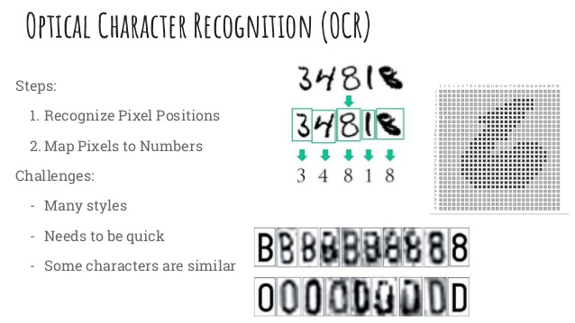
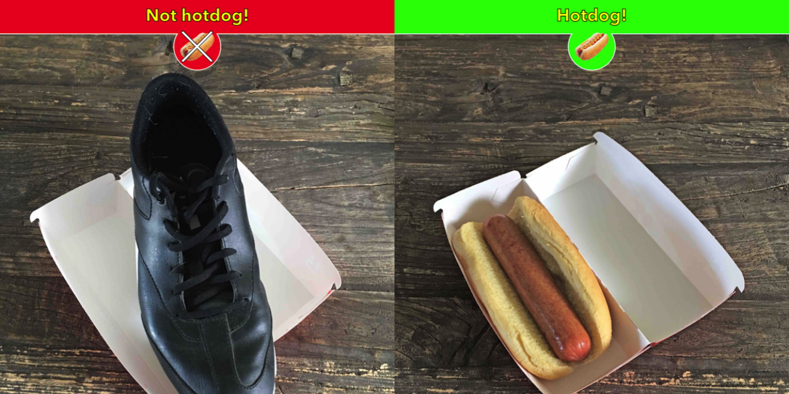

ML
GitHub/ NISH1001
nishanpantha.com.np
What This Talk About
What ML hype is about?
Guide for beginners
Methods used
Okay! I want to get involved. But how?
General problems we face while doing it
But first...
what is Artificial Intelligence?
Building systems that can do intelligent things
Intelligence is
Perpective
Psychological
Ambiguous
Map

Translate
Alpha Go
Youtube's Recommendation
Facebook's News Feed

Other
- Spam Filter in Email
- Google Search
- Weather Prediction
- Games
What is Machine Learning
one of the mechanisms to AI
Building systems that learn from experience
Different methods used to LEARN

Types of Learning
Supervised Learning
- Train the system
- Student learning from a teacher
Training Dataset
- n attributes
- k classes/target
| Glucose | BP | BMI | Age | Diabetes(Y/N)? |
|---|---|---|---|---|
| 148 | 72 | 33.6 | 50 | Y |
| 85 | 66 | 26.6 | 31 | N |
| 97 | 66 | 23.6 | 22 | N |
...
...
Cat vs Dog

OCR
Supervised Learning

Unsupervised Learning
- Let the system figure out the patterns itself
- Students learning on their own

Dataset
- n attributes
- no target class/label

Usage
- Topic modelling
- Unusal activity detection
- Grouping similar texts
Reinforcement Learning
- Rewards based learning
I don't know how to act in this environment, can you find a good behavior and meanwhile I'll give you feedback.

Categories based on Outputs
Classification
Outputs as class labels
Hot Dog or Not?
Regression
Outputs as continuous values
Find relationship among variables
Y = F(X) ?

Linear Regression

Clustering
Unsupervised
Data Intensive

Data?

Computation Intensive
How do I start ?
Base Knowledge
Linear Algebra
Probability and Statistics
Multivariate Calculus
Programming
Data Structures and Algorithms
Linear Algebra
- Matrices
- Vectors
Probability and Statistics
- The Basics
- Bayes Theorem?
- Distribution
- Hypothesis Testing
Take an online course
- Machine Learning by Andrew NG
- Linear Algebra By Gilbert Strang
- Neural Networks for Machine Learning By Geoffrey Hinton
There's more

Bottom Up Learning
Top Down Learning
Implement. Implement. Implement.
Don't Hesitate To Code